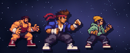
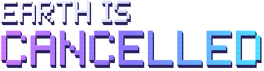
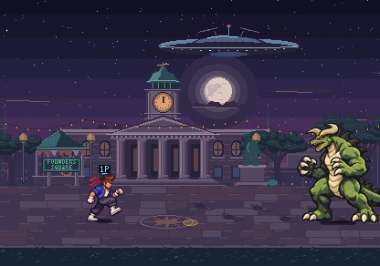
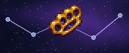
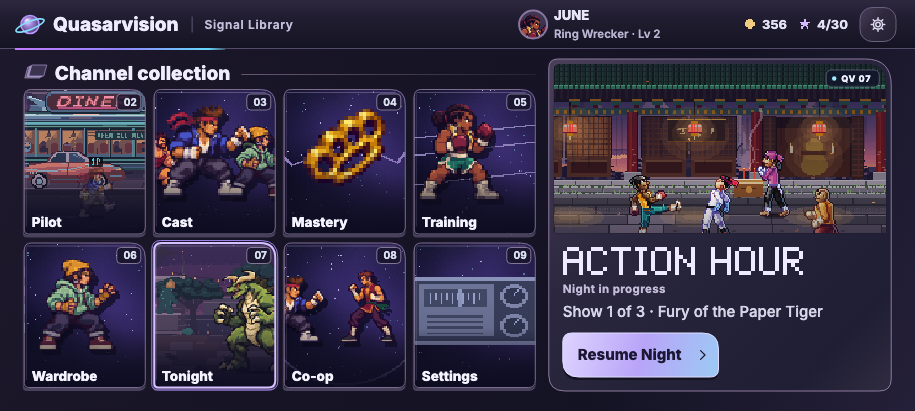
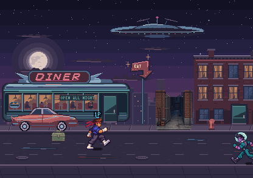

Pick a fighting style.
Give your fighter Ring Wrecker’s grapples or Crash Comet’s combos. The cook you rescue can use either style, too.
Arcade brawler · Solo or co-op

There’s a flying saucer outside Cook’s Diner.
The alien network Quasarvision has cancelled Earth. Its last episode opens with an invasion of Port Static. Fight through the neighborhood alone or with a partner. The people you rescue have their own reasons to take on the network.
The Pilot
The town radio has gone quiet. Drop into the diner cellar and you can bring the cook into the fight. Take the rooftops or the freight alley on the way to the relay. Both routes lead to Founders Square, where Old Thunderjaw is waiting.

Screenshots from the Pilot in development.
Signal Library

Give your fighter Ring Wrecker’s grapples or Crash Comet’s combos. The cook you rescue can use either style, too.

Equip different weapons on the same attack and one press fires them together. Pick up a second copy of a weapon to raise its tier.

Action Hour
In the full game, you choose three shows and the order you fight through them. A kung-fu theatre has its own rival schools. A samurai road has bandits. Each world has people who can join the fight against Quasarvision.
Stack weapons as you go and try their effects together. Take a breather at the Commercial Break. After your third show, the Sign-Off boss closes the night.

Development
The screenshots show our current build. A public release date hasn’t been announced.